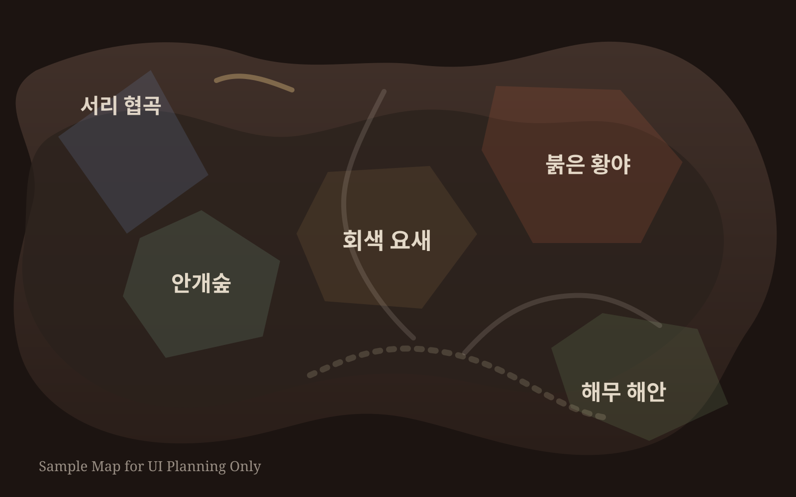

Map Overview
파밍 맵
현재 일부 마커는 유튜브 챕터와 설명문 기준의 임시 좌표입니다. 실제 게임 맵 캡처와 대조해 좌표를 보정하면 됩니다.

Farming Routes
Crimson Desert Farming Guide Prototype
유튜브 공략 영상을 근거로 아이템, 스킬, 탈것, 편의성 루트를 맵 위에 정리하는 형태의 MVP입니다. 현재는 실제 영상 기반 항목을 1차 반영했고, 좌표는 프레임 검수에 따라 계속 정밀화할 수 있게 구성했습니다.
Map Overview
현재 일부 마커는 유튜브 챕터와 설명문 기준의 임시 좌표입니다. 실제 게임 맵 캡처와 대조해 좌표를 보정하면 됩니다.

Farming Routes